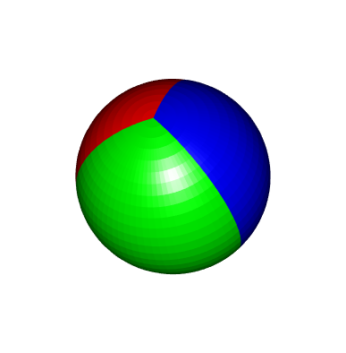
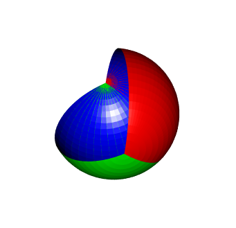
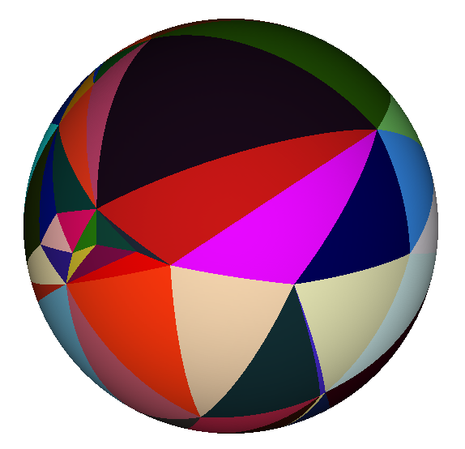

Drawing spherical wedges with rgl
Posted on February 22, 2018
by Stéphane Laurent
Tags: R
This post provides some code to draw a sphere wedge with the R library rgl.
As an helper function, I use spherical2cartesian to convert from spherical coordinates to Cartesian coordinates:
spherical2cartesian <- function(rthetaphi){
r <- rthetaphi[1]
theta <- rthetaphi[2]
phi <- rthetaphi[3]
c(x=r*cos(theta)*sin(phi), y=r*sin(theta)*sin(phi), z=r*cos(phi))
}Now, here is the main function:
sphereWedge <- function(theta1, theta2, radius=1, nm=30, np=30, col="blue"){
thetas <- seq(theta1, theta2, length.out=nm)
phis <- pi * 1:(np-1)/np
meridians <- sapply(phis,
function(phi) sapply(thetas,
function(theta) c(radius,theta,phi)),
simplify=FALSE)
for(i in 1:(np-2)){
x1 <- plyr::aaply(meridians[[i]], 2, spherical2cartesian)
x2 <- plyr::aaply(meridians[[i+1]], 2, spherical2cartesian)
for(j in 1:(nm-1)){
quads3d(rbind(x1[j:(j+1),],x2[(j+1):j,]), color=col)
triangles3d(rbind(c(0,0,radius), spherical2cartesian(meridians[[1]][,j]),
spherical2cartesian(meridians[[1]][,j+1])), color=col)
triangles3d(rbind(c(0,0,-radius), spherical2cartesian(meridians[[np-1]][,j]),
spherical2cartesian(meridians[[np-1]][,j+1])), color=col)
}
}
}A simple example:
sphereWedge(0, pi/3, col="purple")Now let’s draw a tricolor sphere:
sphereWedge(0, 2*pi/3, col="red")
sphereWedge(2*pi/3, 4*pi/3, col="green")
sphereWedge(4*pi/3, 2*pi, col="blue")

As you can see, I use 2*pi and not 0 for the blue wedge. That should be equivalent. However, and I don’t know why, using 0 instead of 2*pi colors the interior of the two other wedges:
sphereWedge(0, 2*pi/3, col="red")
sphereWedge(2*pi/3, 4*pi/3, col="green")
sphereWedge(4*pi/3, 0, col="blue")

Spherical triangles with rgl
I also did a code which draws spherical triangles for rgl. I won’t reproduce it here. If you are interested, it is available in this gist.
